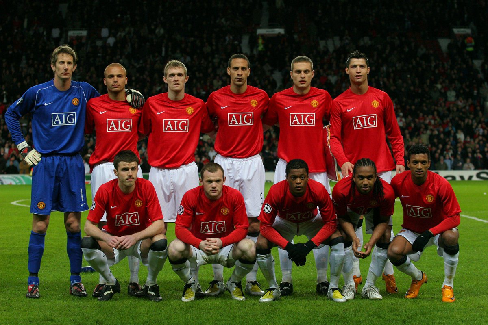
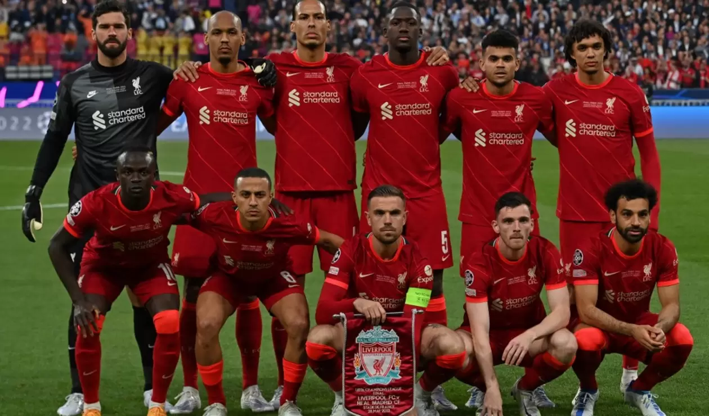

Manchester United 2007-2008
Con un modo ofensivo de juego, un increible Cr7 y una defensa que no dejó pasar a nadie
Chelsea 2011

El equipo desarrolla ahora un 4-2-3-1, el club tiene dos grupos de cuatro jugadores en la fase defensiva, los dos pivotes y los dos laterales de banda en el repliegue defensivo, significa que la filosofía es ahora más basada en el contragolpe
Leicester 2015-2016

De inicio apostaron un estilo defensivo Repliegue para hacer fuerte en nuestro campo. La anchura del equipo en defensa ya nos la proporciona los laterales y los MD-MI, por lo que mantendremos niveles equilibrados Anchura 5 o 6 de 10
Liverpool 2018-2019
A pesar del rencor que le tengo a este equipo, objetivamente fué muy bueno